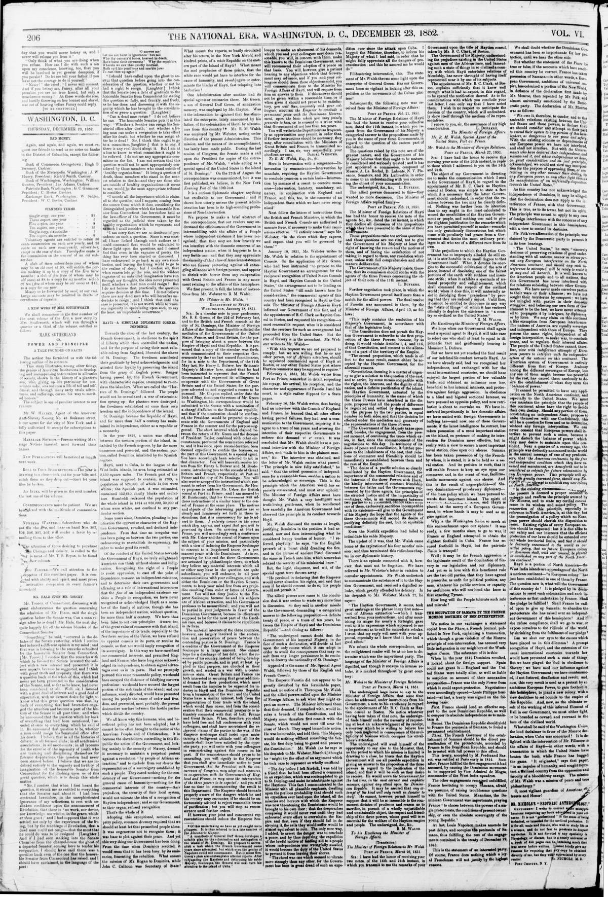

GREENWOOD LEAVES FROM OVER THE SEA.
https://www.loc.gov/resource/sn84026752/1852-12-23/ed-1/?sp=2

See the original pageVer la página original
FOR THE NATIONAL ERA.
[COPYRIGHT SECURED ACCORDING TO LAW.]
GREENWOOD LEAVES FROM OVER THE SEA.
BY GRACE GREENWOOD.
Geneva, November 8, 1852.
MY DEAR ERA: I am writing to you from this beautiful city of pilgrimages—thus far in safety and even improving health—having had strength—thanks to this pure, brisk breath of this balmy southland air—to receive strength to enjoy the delicious skies and magnificent scenery through which we have passed. Above: I begin to feel a glad confidence that the object of my long, anxious pilgrimage is fully attained, and that under the blessed home-influences of this sunny clime, I shall regain a measure of body and elasticity of spirit—shall re-enter the great ranks of workers.
The journey from Paris to Avignon was not one of great interest. After leaving Lyons, the smaller part was very fine, the railway weather being delightful, and the scenery through which we passed was Chalons on the Saone, a picturesque old town. Near Chalons is the Abbey of St. Marcel, where Abelard died, and which I could but commemorate the soldiers who built a railway little steamer, for Lyons, which was small, dirty, and crowded—too much crowded, I had no time to see the famous Cathedral, Notre Dame de Fourvières. From Lyons to Avignon, on the Rhone, on a yet narrower and dirtier steamer—very uncomfortable, though passing through a picturesque old town, where Napoleon landed on his return from Elba. The scenery, as you approach Avignon, is exceedingly beautiful—the river winding through a valley rich in vegetation, rich in growth, and both soft and gorgeous in coloring. All along the gold, brown, and deep crimson of autumn foliage were mingled with the brightest and loveliest living green.
Avignon, though a densely-populated, busy, dirty, narrow-streeted town, with its old walls and bridges, has a quaint, ancient, gloomy character, and is full of historic interest. It has its Papal tyranny, superstition, and persecution, for here were the Papal court, the Papal palaces and the prisons of the Inquisition. Re-marking to my companions, who were enthusiastically looking, in their "Charming Pictures from Italy," we visited those places, especially the dark, terrible dungeons, with their barbacans and store-rooms, scarcely a trace of which remains, except a few stones; but standing there, yet vas in the very atmosphere of the place, there was something which made me shudder to examine, deliberate, and condemn, and try to forget the immensity of the suffering—a feeling that sent a cold horror chilling along my veins. I could but commiserate the soldiers who were stationed in those gloomy barracks. However stupid and unimaginative they look, it seems that in stormy nights they must fancy they hear the immeasurable victims of the bloody "icehouse" shrieking through those black arches; or see, creeping through my very bones the crack of bones upon the wheel, the "sharp, short cry down subterranean—"
After the chill, foggy afternoon in which we beheld this gloomiest of all sights, and at Avignon two of the most pleasant days—and at evening went on board the steamer at Marseilles, to go to the Pont de Gard, a bridge built by Agrippa—a work of immense strength and height, but standing, but in ruins—in truth, the whole effect. The scenery about this noble work has a peculiar character of quiet, lonely beauty, and looked beautiful, and bears the look of an ancient country—and among its grand old evergreen and warlike masters long passed away. In this excursion, we saw first olives, figs, and the pomegranate, growing in the open air. On the second day, we visited the fountain of Vaucluse—the wild, romantic, picturesque home of Petrarch. This is the most beautiful spot I have seen in France. A melancholy place you could dream of in a stormy day—a home for a lonely poet, who fed on the beauty of the fountain itself, which gushes out from the base of a high precipice of black, rugged, and mountain rocks, and pours over a bed of dark green moss into a little river. The waters, which are of a living, luminous green, are so clear that you can count the stones in its bed. It seemed to me that I should have loved to linger there—not to write poetry—only to read it, as it is given by Dickens, in his "Pictures from Italy"—a book which I am now able to read, with a appreciation I never felt for it before—not to speak of the guide, which I have not read, but with a vivid sense of the place, its history and associations. After a short walk, we reached the garden, which tradition assigns to Petrarch—a small terrace on the mountain-side, in a semi-ruinous state of dilapidation and dirt. It seemed a pity that the shrine of genius must pass through peril—I might say through filth, to be reached; but we can hope to place our feet upon the very ground once trodden by the poet-lover.
As we approached Marseilles, by railway, our party filling a carriage, and our luggage stacked up in front, we were met by a gentleman, who came to the side of the carriage, and, bowing to us with a polite smile, which, as he stood, hat in hand, and with a white walking-stick, and with his white mustache and hair, gave him a very military, venerable manner, we had the satisfaction of being taken in charge by one of the old Emperor's proudest officers. Here we received every attention from this polite gentleman, who, I might add, was a gentleman, and said rather impatiently, "Il faut, Monsieur," as he pushed us into his carriage, and drove off with us. So, without further ceremony, we followed the obvious traveller by the arm, and shook him into consciousness, and umbrage, until uncontrollable bursts of laughter on our part. The official looked a little dark and suspicious at first, and made a long and formal explanation of the department of the departure, finding that he was composed of no sensational articles, graciously joined in the laugh, only protesting that somebody must pay for the "petit Monsieur!!"
Marseilles I saw very little of. We were obliged to take passage by her, as a friend of Miss C------, would be awaiting us at Civita Vecchia, to accompany us to Rome. And this I must give you some little account of this night of terror, which is unique in my experience, and is probably unparalleled in yours. The first hours of the voyage flew lightly enough—the night was mild and beautiful, and we had on board several pleasant Americans, among whom was Col. Marshall, of Kentucky, U.S. Minister to China, and laid a pleasant chat on deck—where, indeed, I was advised to spend the entire night, but was overruled by my friends, who thought me ill-fitted for a night of exposure on deck. Towards midnight, we were ushered into the dining-cabin, where mattrasses were spread upon the floor. As you may imagine, this was not for us alone—the place was already crowded with forlorn travellers—English, Americans, Germans, French, Italians—priests, soldiers, women, and children, in a state of confusion worse confounded. Ahead of us an immense amount of trunks and carpet-bags were piled up; and the mattrasses, which were as comfortable as circumstances allowed, were laid so closely together, that we were completely overcome by the weariness of the day—but I could not sleep for a long time. The strangeness of the situation, the disquieting motion of the vessel, the novel and ludicrousness of the scene. As the night advanced, the atmosphere became almost insupportable, and a general chorus of snoring was set up as was never heard before, out of a grand swine-market. Near me lay a stout gentleman, who asphyxiated all night with a succession of loud, stertorous gasps and groans of deep agony. By his side lay a French lady, who, I am sure, suffered from innumerable sleepless nights. I raised myself on my elbow, and looked at her, and saw her face, her sad, sleepless, wandering eye, fixed on her neighbor, while she seemed to listen with an insane temptation to whisper to her, that she should at any time strangle the unoffending monster. A gentleman on the other side, with his unearthly snore, no intelligent jury would convict her of murder—they would call it homicide. On my other side lay a lad, in a state of dreadful sea-sickness; and he—he refers to which he solemnly declares that "boys are a nuisance." However, as the night wore on, I grew almost frantic, and seeing as all I could do was to rise, and go up on the deck, I rose—I rushed upon deck. At the foot of the stairs, I stepped upon a gentleman—a pair of legs were stretched out upon it, sleeping or feigning to sleep; and then, with a light step, I bounded up, and in a sullen rage I staggered again to the deck, and looked out upon the sea. The vessel had been seized upon by some villainous maneuvering, which had tossed us about for hours, and whence no travelling-bay returned. My case was now desperate, and, going up to a gentleman who sat upon the deck, I was stretched upon a bench near by, luxuriating in a comfortable berth, under soft blankets and pillows, and laying my hand upon the outermost of his multiple cloaks, I said, as near in tone as I could command, "Monsieur, c'est a moi"—meaning the seat. He rose instantly, with a "Pardon, Madame"—I then made a bed of it—wrapped myself most stoically in my cloak, wrapped my veil about my head, and laid down, as content as a cabbage-head, in a basket! The night was magnificently beautiful—the sky was so wondrously clear and blue, and the stars so intensely bright, and the sky of a deep, delicious, soul-bewildering blue—heaven's canopy of state over the loveliest of earth. The light, thin clouds were light and silvery, and assumed a thousand weird and fantastic shapes. One, I remember, took distinctly the form of a graceful woman, in the flowing Greek costume; in her hand she held a star, and seemed bending forward, as though trying to blow out its light, and then, as I watched it, she seemed to blow herself away in twin paths of extinct animation.
But this heavenly contemplation became a little cool—I began to feel very chilly and weariness, when a young countryman of mine, whom I had not before noticed, having been driven by cold from the deck below, came up to where I sat, trying to pass near, recognized me, and, horrified at my exposed condition, he brought out a mattress into the depths of the cabin, on a marauding expedition, and soon returned with a mattress, which he re-turned, laden with spoil, in the shape of two blankets, and a large pillow! These he very merrily, while arranging those for me, nounced that they were "conveyed," as ancient Pistol has it—though I could only faintly resist to roset or remonstrate.
A second blanket, and a good night's rest, made a great change in my health—and this slight indigestition at the heinous robberies committed for my comfort. I awoke next morning, refreshed and well; the sea was no longer rough; the sun shone out brilliantly; I awoke, and, wrapped in my blanket, sat upon the deck, enjoying the glorious scene, until a brief rain shower passed, and I took not the slightest harm.
About sunrise, Colonel Marshall came on deck, and, seeing me, came up, and, being a countryman, he had no sooner cast his eyes upon the mattress, than he recognized it as his own! It appears he had gone on deck for a moment, leaving his pillow on his mattress, when my friend had pounced upon them in the dark, and carried them off! "I had no sooner seen him in the torpor of suffering sea-sickness—amid all the absurdity of the scene, I could not help laughing till the tears ran down my face."
At four o'clock, we reached Civita Vecchia, Mr. Cass, M. C.,'s kind permit, came on board, to receive and obtain permission for the police for us to land without delay, and conducted us through the form of breakfasting at a hotel, and we set forth for Rome, in imposing state, in an enormous diligence, with six horses and three postilions. The road runs through a bare, uninteresting, and desolate country. More than ten miles from the Eternal City, we caught a view of St. Peter's, looming up like a small mountain, and every heart stood still at the sight. It was dark when we entered Rome, yet we recognized several grand landmarks; we reached our grand pleasant house in the Corso, from whence I greet you, and bid you adieu. GRACE GREENWOOD.
things cannot go on forever as they are going on now. Within even the short interval which has elapsed since my own visit to the Union ten years ago, and even from this far distance, it is impossible not to perceive a marked slowdown of progress in the career of the great republic. Cause seems to me the formal proposal of a candidate by the Anti-Slavery party for the Presidency of the United States; some are taking the appointment conferred last year, by the experimentally commercial, eminently American State of Massachusetts, to the office of its Senator in Congress, upon my own much-admired friend, Mr. Charles Sumner. In our past hours it has been interesting to me to see how much, unimpressed by the sparkling oratory of Seward, or upon the solemn, deep-toned, and well-placed prose of Webster—while I have been delighted by the speeches of Mr. Sumner, I cannot, how little I be, feel well assured, drowned as I am by the murmur of your great, unostentatious, and unceasing progress... How often have I heard the assertion made by American citizens, how often have I seen it in American prints, that the white race would yet have to interfere for the cause of humanity, and re-subjugate or exterminate the blacks of Hayti, fast relapsing into barbarism! The Administration under Fillmore had special agents or emissaries there. Mr. Green, a son of General Duff Green, of annexation memory, was employed by Mr. Clayton. Was it the information he obtained that has stimulated the enterprise,
He turned from the noble deed, turned away, and distinguish them
From those who, under cover of the laws, defraud their fellow-men,
Guard them from wrong, adversity, and shame.
Shall they be left a prey to savage power?
Not an American heart but bleeds this hour!
Or cry to Heaven for help, and not in vain?
Shall we not send our ships across the main,
And save the friendly captives from oppression,
And punish those who commit such aggression,
And wave a warning combat on your side?
"Castle Howard, Oct. 8, 1852."
Dateline as printedLugar y fecha según el original
Geneva, November 8, 1852.
How to cite this articleCómo citar este artículo
The National Era. (1852). Washington [D.C.], December 23, 185223 de diciembre de 1852. DR in the American PressRD en la Prensa Norteamericana. Library of Congress, Chronicling America: https://www.loc.gov/resource/sn84026752/1852-12-23/ed-1/?sp=2
ReferencesReferencias
Library of Congress, Chronicling America: The National Era, December 23, 185223 de diciembre de 1852.
Send an observationEnviar una observación
Does this article connect with your family, your town, or something you know? Did we get something wrong? Write to us. Observations go to the editor's inbox and are read by a person.¿Este artículo conecta con su familia, su pueblo o algo que usted conoce? ¿Nos equivocamos en algo? Escríbanos. Las observaciones llegan al buzón del editor y las lee una persona.
Send observationEnviar observación